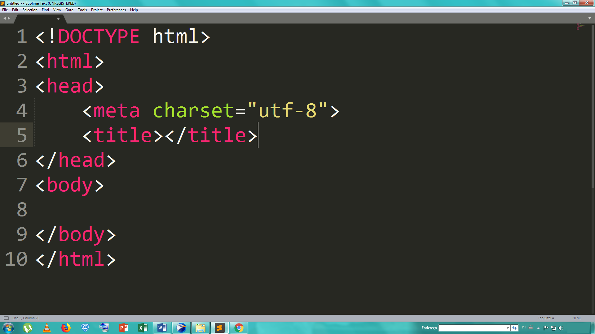
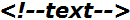
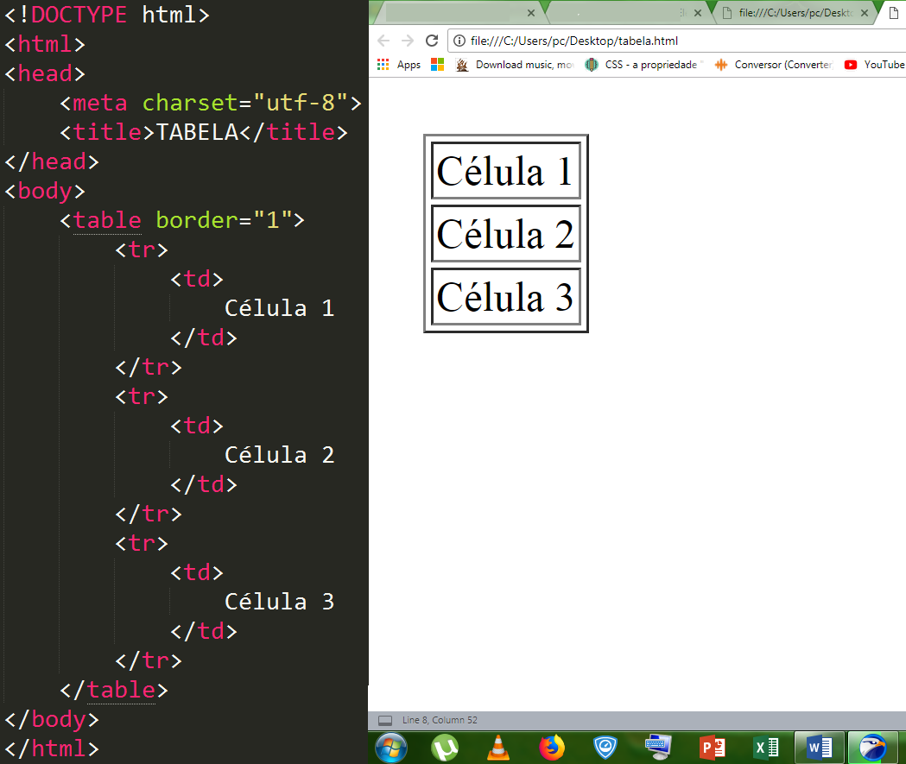
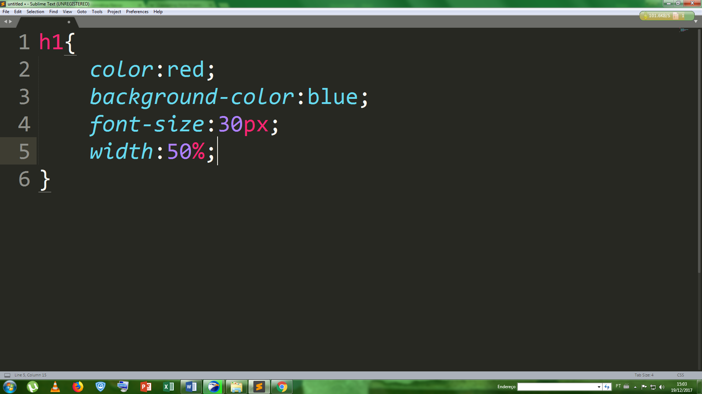

A internet é um sistema global de rede de computadores interligados, que utilizam um conjunto próprio de protocolos. Na internet existe uma parte chamada de intranet, que seria justamente a parte privada da interne, como redes de bate-papo, sites de empresas e outros. Na internet existe um protocolo chamado de HTTP (Protocolo de Transferência de Texto Inteligente), que seria, protocolo para transferência de sites e de aplicações web através de um programa chamado "Browser". Na internet existem dois tipos de sites, os servidores e os clientes. Um servidor seria que fornece ao cliente informações ou serviços. Um cliente seria o que solicitasse a informações ou serviços.
Na internet encontramos dois tipos de páginas, os sites e aplicações web. Site seria apenas uma página de leitura onde você apenas ler, como páginas de notícias, postagens, informações, ou seja, um site "read only", como o site do G1. Uma aplicação web tem um contato mais próximo com o usuário de forma de forma interativa como redes sociais, sites de compras e outros. Um exemplo básico disso é o Facebook. Um site responsivo seria uma página capaz de se adaptar estruturalmente a qualquer tipo de tamanho de tela. Cada site tem um endereço, esse endereço é conhecido como IP (protocolo de internet) que é basicamente formado por uma sequência aleatória de números. Geralmente o número IP é bem extenso e difícil de decorar, por isso existe servidor chamado de DNS (Sistema de Nome de Domínio) que disponibiliza ao site nome nos padrões WWW (word wide web), para facilitar ao usuário encontrar sites na internet sem precisar no endereço IP da página. Existem programas conhecidos como Browser que tem como função permite a navegação na internet e nos sites online.
Uma linguagem é a forma de comunicação através de gestos, sequencias sonoros e símbolos sistematizado. Uma linguagem de programação pode ser conceituada como uma forma de comunicação com o computador, lhes enviando comandos para que ele execute uma tarefa específica. A linguagem HTML (Linguagem de Marcação de Texto Inteligente) é uma linguagem de marcação, ela tem como função criar a estrutura lógica de site web. Para criarmos um site em HTML precisamos de programa capaz edição de texto simples como o "bloco de notas" do Widows. Existem vários programas especializados para realizar a tarefa de programação, como o editor de texto "Sublime" que facilita a programação de vários softwares, como um site web em HTML.
OBS:O texto escrito por um programador é chamado de "Código Fonte", ou apenas Código.
A linguagem HTML possui elementos hierarquicamente organizados. Utiliza tags que são formadas por para iniciar o elemento, e para fechar o elemento. Algumas tags não necessariamente tem que ser fechadas, esses por sua vez são chamados de "voids, como , e . Elementos podem trazer atributos e conteúdo, como a tag "meta" que é usada basicamente para identificar a cadeia de caracteres usado no site, mas ela precisa do atributo "charset" para realizar sua função. Atributos são informações que passamos nas tags para que elas se comportem da maneira esperada. A estrutura básica de um arquivo HTML é dada por o tipo de documento que no caso é html. Logo após é iniciado o código com a tag "html", em seguida vem a tag "head", continuando com a tag "body" e fechando de forma decrescente as tags abertas. Podemos ver mais detalhado na imagem abaixo.

Como dito acima a estrutura básica de um arquivo HTML é constituído por tags formadas por para iniciar o elemento, e para fechar o elemento. Existem vários tipos diferentes de tags, como tags para cabeçalho, , para comentário , parágrafos , uma lista ou , um menu e muitas outras. Numa estrutura HTML temos tags básicas como a tag , onde dentro de sua estrutura é formado todo o código HTML. Dentro da tag temos a tag que é usada para dar o título da página do site e que é uma tag cujo é formado todo o corpo do site.
Uma tabela em HTML é formado por linhas horizontais e colunas verticais. A tag usada para definir uma tabela em HTML é . Para construir tabela, primeiro devemos declarar uma borda dentro da tag de tabela, as linhas horizontais são feitas pela tag e as colunas verticais são feitas por . Cada quadrado na tabela é chamado de célula e cada célula é consequência da junção das tags TR e TD. Veja o exemplo abaixo.

CSS ou Folha de Estilo em Cascata, é um mecanismo para a estilização do arquivo web (documento .HTML). css tem uma sintaxe simples, que utiliza elementos em inglês para a formatação das tags. O css define cores, tamanho, borda, margem e muitas outras coisas. Existem três formas primitivas de usar css em um documento HTML, uma delas é de forma externa, ou seja, criar um documento CSS e ligá-lo a um documento HTML através da tag em html. Outra forma de usar css em html é, de maneira incorporada, ou seja, usar a tag como texto css. A última forma de usar css em html é deforma inline, ou seja, usar dentro de uma tag o atributo "style". Um seletor é aonde formatamos as tags de maneira mais adequada, onde informa-se o nome da tag e entre chave, declara-se a propriedade e valos. Veja o exemplo abaixo.
